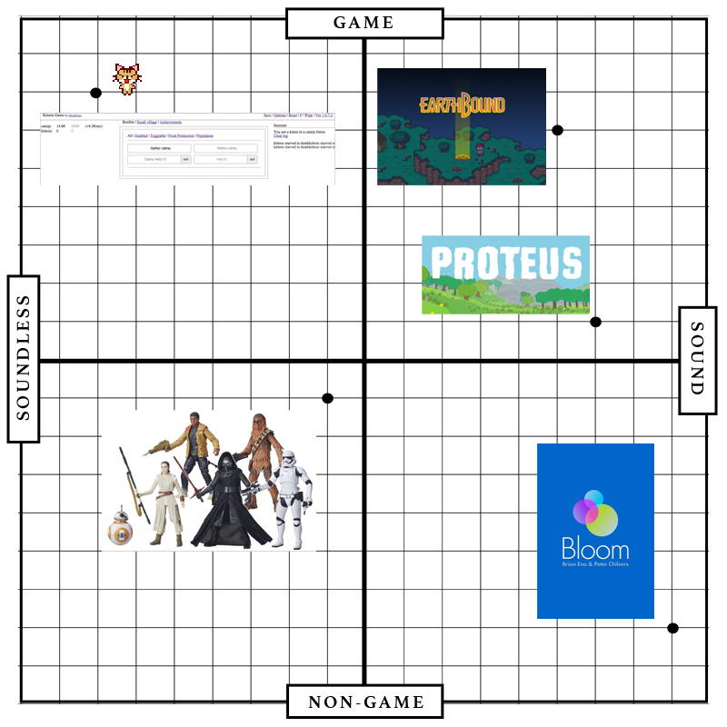

Game Sounds and Flow
The role of game sounds in user play and immersion
Created by Kaitlin Gu / Advisor Finn Brunton
Why I chose to study game sounds
Music sampling:
Why I chose to study game sounds
Music sampling:
- Dom Kennedy, “Locals Only” - Chrono Trigger
- Eminem, J. Black & Masta Ace, “Hellbound” - Soulcalibur
- Joey Bada$$ feat. Chuck Strangers, “Fromda Tomb$” - L.A. Noire

Objectives
Three overarching questions:
- How do game sounds define games?
- How do game sounds provide an immersive environment for the user?
- How do game sounds guide a player through the game?
History of Video Game Music
From sound to soundless
1950s: Soundless video games
- Bertie the Brain
- Cathode-ray amusement device


Early 1980s: 8-bit VGM
- Pong
- Atari
Late 1980s: 16-bit VGM
- Street Fighter 2
1990s: 32-bit VGM and CD technologies
- Tekken
Cultural significance

Existing Literature on Video Game Music
Case Studies

Proteus
Kittens Game
G - - G - G G G C G G G C C CLudo-musical
The possiblity to read all games as dynamic scores already complete with the necessary time-structures based on rhythmic information